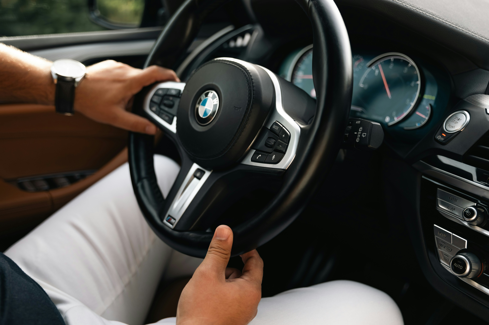

Osobisty kierowca
Profesjonalna i dyskretna obsługa kierowcy dla klientów prywatnych oraz firm. Komfortowe przejazdy, pełna punktualność i bezpieczeństwo.
- Prywatny szofer – stała opieka kierowcy lub pomoc jako kierowca zastępczy.
- Obsługa imprez – bezpieczny powrót do domu z wesel, bankietów i spotkań.
- Transfery – szybki odbiór oraz dowóz na lotniska i dworce.
- Trasy krajowe – komfortowe przejazdy służbowe oraz prywatne po całej Polsce.
- Logistyka auta – odprowadzanie samochodu na przeglądy, do mechanika lub myjni.
- Czyszczenie pojazdu – kompleksowe mycie bezdotykowe i odkurzanie wnętrza.
- Codzienne sprawy – realizacja Twoich zakupów i sprawunków w czasie, gdy pracujesz.
- Wsparcie seniorów – pomoc starszym osobom w transporcie i codziennych obowiązkach.
Posiadam prawo jazdy kat. B od 2008 roku. Jeżdżę spokojnie, bezpiecznie i zgodnie z przepisami. Pracę wykonuję samochodem klienta.
W dzień: od 60 zł/h,
Weekend / imprezy: od 100 zł/h
dłuższe trasy: wycena indywidualna

Pogotowie komputerowe i techniczne
- Pomoc i edukacja – nauka obsługi komputera i telefonu, ze specjalnym wsparciem dla seniorów.
- Instalacja i konfiguracja – wgrywanie systemów, sterowników, programów oraz podłączanie drukarek i Wi-Fi.
- Serwis i modernizacja – składanie komputerów, wymiana dysków (SSD), pamięci RAM oraz ekranów.
- Przyspieszanie sprzętu – czyszczenie systemowe, usuwanie wirusów oraz fizyczna konserwacja wnętrza laptopów.
- Wygodne formy wsparcia – pomoc na miejscu u klienta lub błyskawiczna pomoc zdalna (TeamViewer/telefon).
Jasne zasady: Przed pracą zawsze wspólnie ustalamy zakres działań i koszty.
Przy pomocy zdalnej poponuję: już od 80 zł/h
Przy pomocy na miejscu:wycena indywidualna

Tworzenie stron internetowych – Twoja wizytówka w sieci:
- Strony wizytówkowe – nowoczesne, responsywne i unikalne strony WWW dopasowane do Twojej firmy.
- Nowoczesne technologie – kod pisany od zera (HTML, CSS, JavaScript) bez ciężkich szablonów, co gwarantuje błyskawiczne działanie.
- Prosty i czysty kod – dokładnie taki, na jakim stworzyłem stronę z tym ogłoszeniem, co zapewnia stabilność i bezpieczeństwo.
- Indywidualne podejście – brak gotowych, powtarzalnych wzorów, projekt w pełni dostosowany do Twoich potrzeb i branży.
Elastyczna wycena – brak ukrytych opłat, koszt każdego projektu ustalam indywidualnie przed rozpoczęciem prac.
Osobisty kierowca
Działam na terenie całej Polski. Na co dzień jestem w Żyrardowie (okolice Warszawy), jednak dojeżdżam do klientów komunikacją publiczną (pociąg, autobus, komunikacja miejska).
Jestem osobą spokojną, punktualną, dyskretną i bez nałogów. Oferuję pomoc osobom prywatnym, seniorom oraz firmom w wielu codziennych sprawach.
Oferuję profesjonalne usługi kierowcy:
- Prywatny szofer – stała opieka kierowcy lub pomoc jako kierowca zastępczy.
- Obsługa imprez – bezpieczny powrót do domu z wesel, bankietów i spotkań.
- Transfery – szybki odbiór oraz dowóz na lotniska i dworce.
- Trasy krajowe – komfortowe przejazdy służbowe oraz prywatne po całej Polsce.
- Logistyka auta – odprowadzanie samochodu na przeglądy, do mechanika lub myjni.
- Czyszczenie pojazdu – kompleksowe mycie bezdotykowe i odkurzanie wnętrza.
- Wsparcie seniorów – pomoc starszym osobom w transporcie i codziennych obowiązkach.
Posiadam prawo jazdy kat. B od 2008 roku. Jeżdżę spokojnie, bezpiecznie i zgodnie z przepisami. Pracę wykonuję samochodem klienta.
Proponuje:
W nocy: od 100 zł/h,
Weekend / imprezy: od 100 zł/h
dłuższe trasy: wycena indywidualna